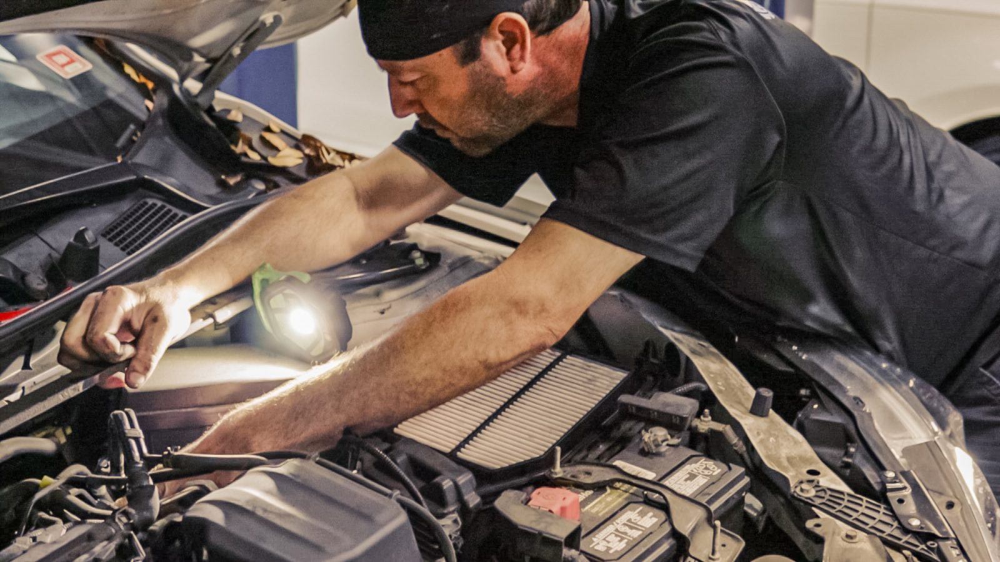
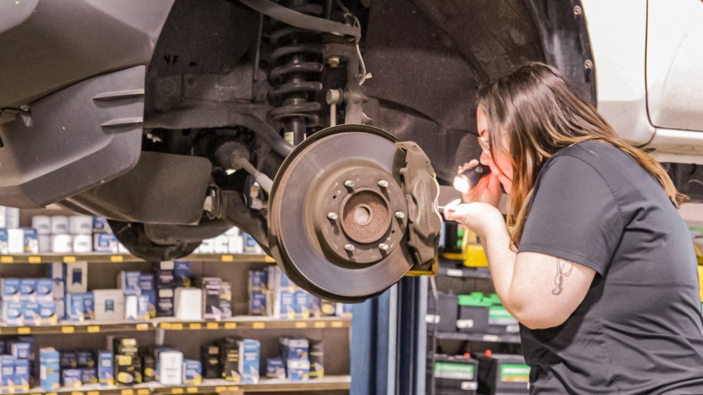
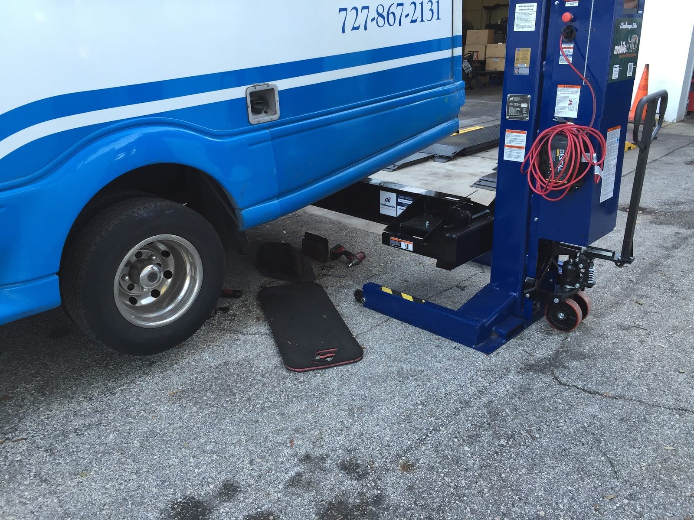
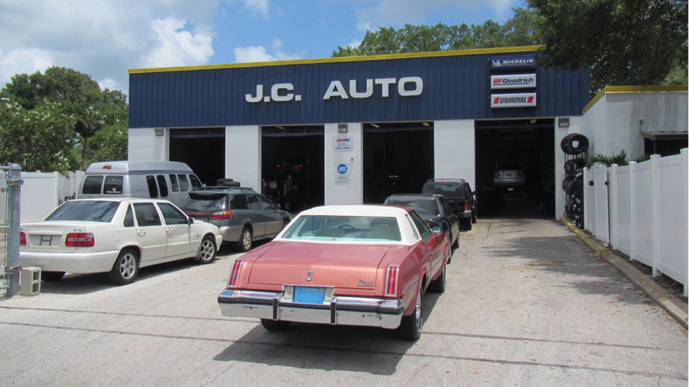
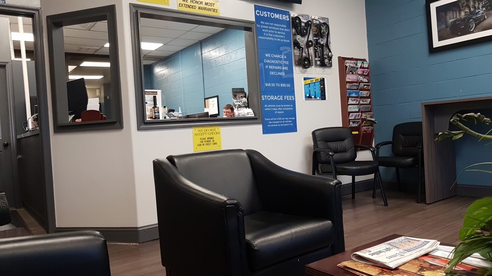
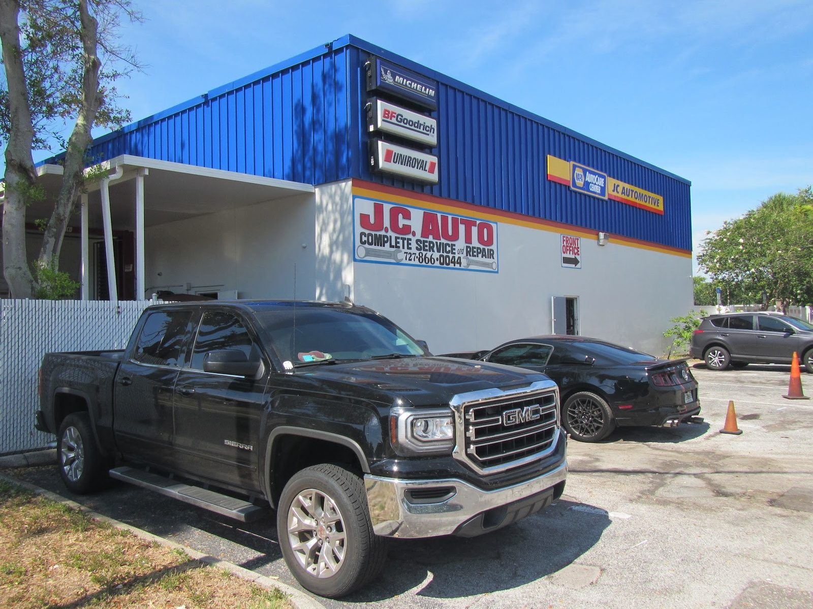
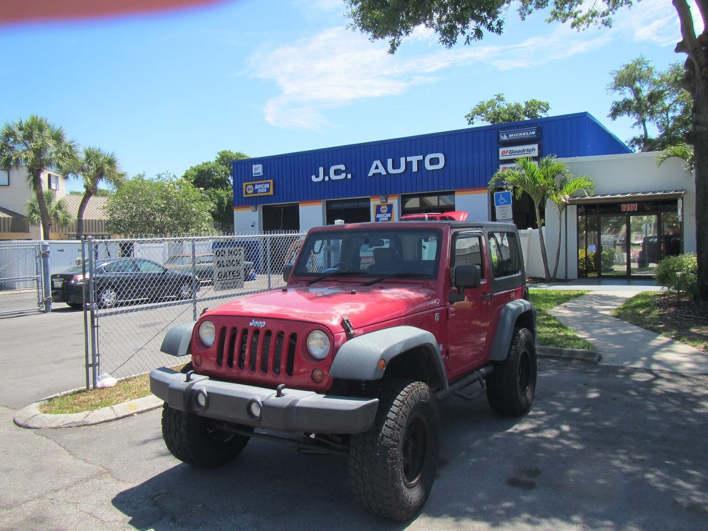
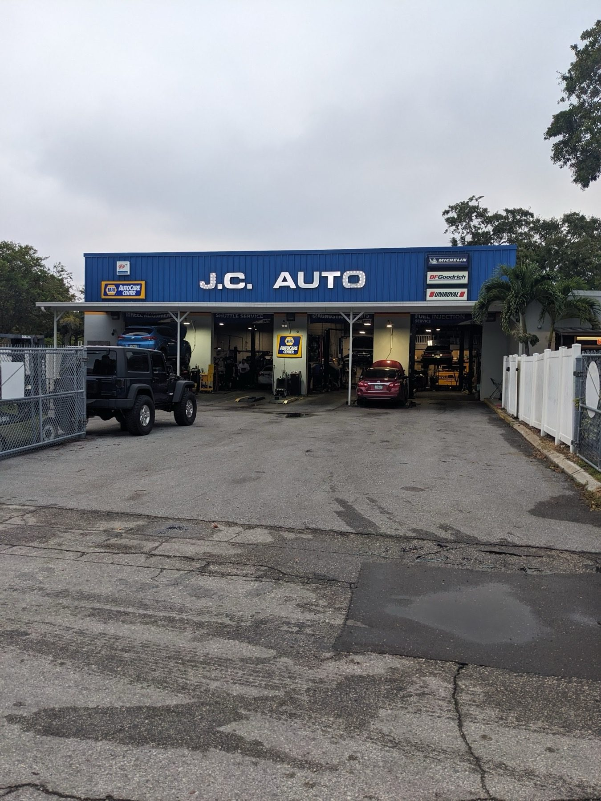

Multi-point inspection
St. Petersburg, FL
- Checked
- Watch
- Fix now
Auto repair · St. Petersburg, FL
Your dealer alternative, since 1988
We fix everything, from timing chains to tires. AAA-Approved and NAPA Gold-certified.

- Shop
- J.C. Auto
- Rating
- 4.7/ 5
- Signed off by
- 907Google reviews
- Call
- (727) 866-0044
- Timing chains
- Brakes
- Tires
- Transmissions
- Diagnostics
- Climate control
Systems we check
What we check and fix
- Checked
- Watch
- Fix now
-
Timing chains and water pumps
Our specialty: timing chain replacement and timing chain driven water pumps.
- Timing chain replacement
- Timing chain driven water pumps
-

Diagnostics and programming
Factory scanners for Ford, Chrysler, Jeep, GM and Nissan. Warning lights, computer and key programming.
- Engine diagnostics
- Warning lights
- Computer programming
- Key programming
-

Brakes, steering and suspension
Brake repair, steering and suspension, axle, CV joint and driveshaft work, and wheel alignment.
- Brake repair
- Steering and suspension
- Axle and CV joints
- Driveshaft
- Wheel alignment
-

Tires
Michelin, BFGoodrich, Uniroyal and more. Mounting, road force balancing, rotations, nitrogen fill and TPMS.
- Tire services
- Road force balancing
- Nitrogen inflation
- TPMS
-
Transmission and drivetrain
Transmission repair, differential repair and four wheel drive systems.
- Transmission repair
- Differential repair
- Four wheel drive
-
Maintenance and systems
Oil changes, belts and hoses, cooling, exhaust, climate control, batteries and charging.
- Lube, oil and filter
- Belts and hoses
- Cooling system
- Exhaust
- Climate control
- Starting and charging
The record
- 4.7Google rating
- 907Google reviews
- 1988Open since
- 2 yr24,000-mile warranty
Signed off
Reviews
4.7 / 5 from 907 Google reviews
Note
The team at JC Automotive Service Inc. is outstanding. I've been taking my 13-year-old Mini Cooper to them for years, and they have always provided honest, reliable service. They clearly explain what needs to be repaired right away and what can safely wait, which I really appreciate. Their pricing is fair, and they consistently work to find the best value for their customers.
Note
We were traveling to St. Pete for a wedding and began having engine trouble on our trip down from Atlanta. I asked a local friend if he knew of a good local mechanic that was trustworthy. He strongly recommended JC Automotive. We arrived at the shop around 1:30pm on Friday. They diagnosed the problem right away and the problem was fixed by 5pm the same day.
Note
I can’t say enough good things about Dan, Mike and the staff at JC Auto. My family and I have all brought our cars to them for many years, and they have consistently been professional, courteous, honest, and incredibly helpful. Over time, they have truly earned our trust.
Note
These guys did a bunch of work on my 86 Jeep Grand Wagoneer. alternator, tires, window switches, battery, electric work, etc. Good communication, fair pricing. A solid shop with career techs that know what they’re doing.
Note
⭐⭐⭐⭐⭐ Dan provided outstanding customer service from start to finish. He was incredibly kind, patient, and took the time to answer all of my questions without ever making me feel rushed. He kept me informed every step of the way and made the entire process smooth and stress-free. It’s clear he truly cares about his customers and takes pride in what he does.

The shop
About the shop
John Celona opened J.C. Automotive Service in 1988. Our technicians also work on older vehicles, built before 1995.
The waiting room has coffee and Wi-Fi. The key drop takes your car overnight.
- Dealer repairsDealer-level work on Ford, Chrysler, Jeep, GM and Nissan.
- Warrantied work2 years or 24,000 miles, nationwide, on all repairs.
- Fair pricesClear on what needs fixing now and what can wait.
Photos
Around the shop










Find us
Find the shop
6101 Dr. M.L.K. Jr St S, St. Petersburg, FL 33705
Night key drop and a waiting room with coffee and Wi-Fi. Closed Saturday and Sunday.
Hours
- Mon
- 7:30 AM–5:30 PM
- Tue
- 7:30 AM–5:30 PM
- Wed
- 7:30 AM–5:30 PM
- Thu
- 7:30 AM–5:30 PM
- Fri
- 7:30 AM–5:30 PM
- Sat
- Closed
- Sun
- Closed